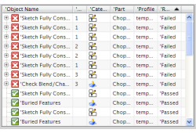

过滤测试结果
使用 Check-Mate HD3D 工具的设置组中的选项来过滤您的测试结果。
|
选项 |
描述 |
||||||||||||
|---|---|---|---|---|---|---|---|---|---|---|---|---|---|
|
过滤结果 (多个) |
根据您的选择来过滤报告结果。
仅显示将优先于其它所有设置。 |
||||||||||||
|
过滤级别 |
选择选项以指定如何在结果组中按层次结构组织测试结果。 测试结果将以三种层次结构来进行组织： 部件 按每个已测试的部件分组结果，并将执行的测试嵌套在此节点中。 测试 按每个已执行的测试分组结果。 对象 按每个已测试的对象分组结果。某些测试不包含对象，比如部件属性是否存在的测试。 |

|
提示 |
通过单击列标题，可按该列对表中的结果进行排序。第二次单击相同列标题，可在升序和降序之间切换。  |